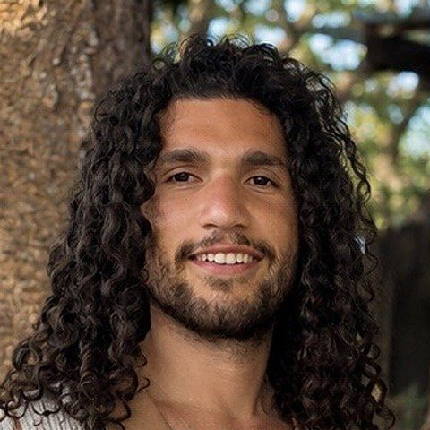
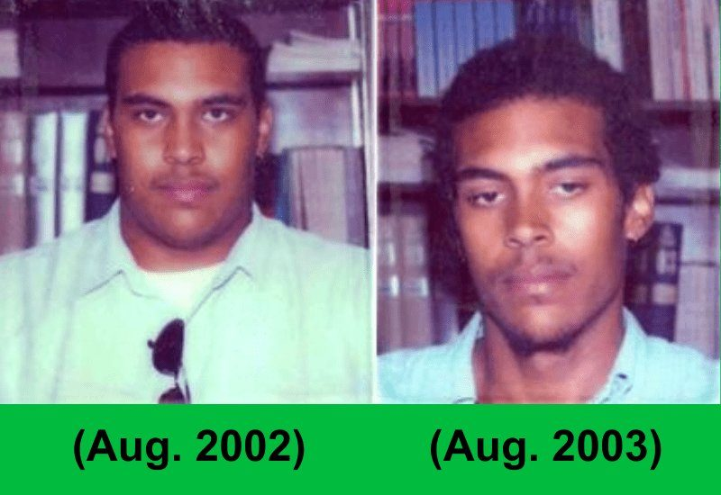
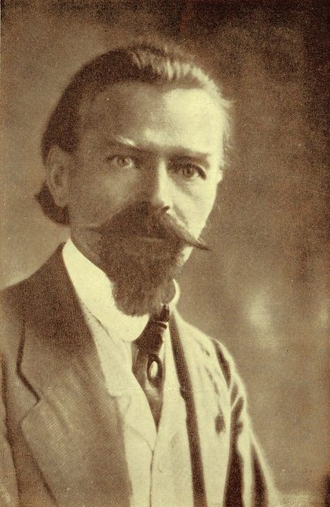
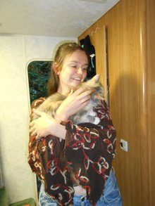

A free course from Prof. Spira & JC · Mucus-free Life
Start Where You
Actually Are

Taught by my teacher, Prof. Spira, and me.
Seven modules, three starting menus, free.
Seven modules · three starting menus · a full day of meals cooked on camera
What you will learn
- Why this practice is not about adding nutrition to your body, but about slowly and safely removing the foods that harm it
- Why every diet you have tried crashed by week two. It was never your discipline
- A starting menu matched to the way you eat today, not the way you wish you ate
- Why the same foods, eaten in a different order, behave completely differently in your body
- How to use comfort foods as brakes, on purpose, so "falling off" is treated as part of the journey and not the end of it
- A grocery list and the equipment list, on the budget you already have
- Recipe videos and a full day of meals cooked on camera. Learning starts tonight; the transition itself is a process you walk at your pace
What it is not
- It is NOT a 7 day detox challenge
- It is NOT an all fruit diet
- It is NOT an extreme protocol
Who is walking it with you
That First Summer
Relapse City
JC Ortiz-Roman · The paradigm
"When I first started the practice, I came into it thinking I was better than the basics because I had spent all these years practicing, dabbling. It creates such a bad sense of confidence. With diet you have to really let go of the ego and what you think you know. And I remember that first summer was just relapse city, and I didn't know how to control those relapses."
"I was told how my body works, why it works this way. I realized that I wasn't lied to, and then I was able to walk on my own two feet. It's like being told how to use your body and then you never need to listen to anyone else again. It is just like pure freedom."
Who taught me this
Meet My Teacher, Professor Spira
The Man Behind What I Share With You

I had plenty of information and no idea how to put it together. The person who showed me how is my teacher, Prof. Spira.
In August 2002 he weighed over 300 pounds, with sleep apnea, migraines and constant sinus infections, and doctors told him it was genetic. That year, at a jazz gig in Cincinnati, a drummer handed him Arnold Ehret's Mucusless Diet Healing System and asked for nothing. Within six months he had released more than 100 pounds, discarded the C-PAP and stopped his medications.
He has spent the 24 years since practicing and teaching this system.
He opens every module of Transition Diet 101. I produce most of the lessons and answer your questions inside the community. When you enroll, your first email comes from him, with your access link. Open it. A welcome from me follows.
Read these slowly
This was built for you if
- You are doing everything right by natural health standards and you are still exhausted. The tiredness sleep does not fix.
- You have been bloated for years and you are sick of looking at it.
- The congestion never fully leaves. The runny nose that has been temporary for about five years now.
- You are a veteran of things that did not hold: vegan, keto, carnivore, raw vegan, fasting, Master Cleanse, Medical Medium, Dr. Sebi, Dr. Morse.
- Cravings run your evenings, and every slip feels like a verdict on your character instead of what it is: missing mechanics.
- You have known about the Mucusless Diet for years and have not been able to commit.
- You are the only one at your table doing this, and going at it alone keeps not working.
- You have read everything and it has all become too much. Too many rules, no starting point.
Who this is not for: anyone in a medical emergency, that is what doctors are for, and anyone shopping for a magic pill. This is a method. You walk it.
Why this works when everything else didn't
It was never another diet you needed

"It is necessary to base the change in diet on the patient's present diet. Only a slight change is advisable."Arnold Ehret · Mucusless Diet Healing System, Lesson 4 · 1922
Everyone hears about the destination. Everyone races toward it. Almost nobody is ever taught how to actually get there. Transition Diet 101 is the map and the vehicle.
You are taught to view food as tools, not sins. Certain foods act as gas pedals and speed up elimination. Certain foods act as brakes and slow it down, on purpose. And you use them for as long as you need them.
Everything inside, valued honestly
Seven modules, yours tonight
You can watch the whole course this evening and run your first day tomorrow morning.
The Foundation
Why transitions hold when every diet you tried crashed.
The Three Starting Menus
Find the one that fits the way you actually eat today. No cliff, no perfection test.
The Shopping System
Never stand lost in a grocery aisle again. Lists, swaps, and the budget you already have.
The Mechanics Masterclass
Gas pedals, brakes, combining and spacing. The end of the week two crash.
The Full Day Kitchen Intensive
Watch your entire first day cooked before you have to live it.
The Ancillary Therapies
The tools beyond the plate, introduced personally by Prof. Spira.
The Next Steps Roadmap
Every path forward laid out honestly, including the ones you are not ready for yet.
The private community
Foundations access to our own platform. No Facebook, no ads, no algorithm.
The part that is not a video
You will not do this alone
Enrolling also opens our private platform. No Facebook, no ads, no algorithm. Four doors open on day one.
Start Here
Where you are, what to do first, and who is walking with you.
Transition Diet 101
The course home. All seven modules, watchable tonight.
Recipe Library
The transition recipes that make your menu real.
Beginner FAQ
The questions every beginner asks, already answered.
People who stood where you are standing
It was never another diet
★★★★★
"I knew something was wrong, I was depressed, constipated, and had low energy. When I started to work with Prof. Spira, he showed me what the 'transition diet' looks like. As soon as I started to implement it and prepare those meals, I began having regular bowel movements… without taking any laxatives."
★★★★★
"By the end I had a much better transition diet menu plan and felt it was realistic for me to stick with it. I was on a much more positive track than at the beginning."

★★★★★
"The perfect starting point no matter where you are in your journey. A fresh new perspective… help with understanding the diet and putting the system altogether."
0:47 · Video
"I didn't expect to feel this good. I didn't think that a DIET could make me feel this good. Now I train less, but I can train harder."
Rashad Evans · UFC Hall of Famer & former light heavyweight champion · Boca Raton, FLWhere this leads
A clear place to begin, and a road after it
Start with TD101
Learn the foundation, pick your starting menu, run your first day.
Grow inside the community
Recipes, the beginner FAQ, and people walking the same road.
Go deeper when you are ready
For hands-on structure and personal guidance, the team runs the 30-Day Transition Diet Bootcamp and offers a free Clarity Call to help you choose. You will hear about these in your emails. The free course stands on its own.
Fair questions, straight answers
Is it really free?
Is it really free? What is the catch?
It is free, and there is no card needed to get access. Someone handed Professor Spira this knowledge across a table in 2002 and asked for nothing, so we will not put a toll on the doorway. Deeper, personally guided programs exist and carry real tuition. They are optional, and you will hear about them in your emails.
Do I have to give up cooked food and go raw?
No. That is the mistake this course exists to prevent. Cooked food stays on your plate for as long as you need it, on purpose, and you will learn exactly how to use it.
I have failed at vegan, keto, raw and fasting. Why would this be different?
Because those were destinations and this is the bridge. The week two crash is not a character problem, it is what happens when you speed up elimination with nothing to slow it down. Module 4 is the whole mechanics of it.
Do I need to know the Mucusless Diet already?
No. If you have never heard of it, you start at the beginning. If you have owned the book for years and never applied it, you are the person this was built for.
How much time does this take?
You can watch the course in one evening. The practice itself is a grocery trip and the way you put a plate together.
What happens right after I enroll?
You'll get an email from Professor Spira first, with your access to the course and the private community. A welcome email from me follows after that.
Enroll free. Start tonight.
Seven modules, three starting menus, one full day on the plate. Instant access.
You have momentum right now that you will not have in three weeks.Later is where this goes to die.